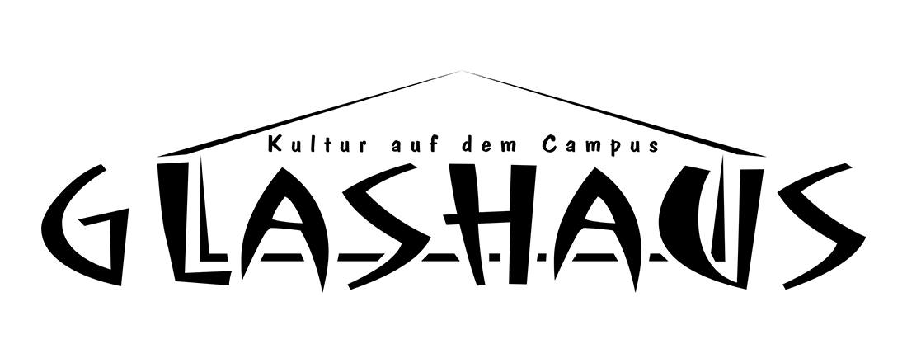

4.6 Das Glashaus

Gerade Lust auf eine Pause vom Unistress - aber wo ist das nächste Sofa? Lust auf Kaffee - aber die Kaffeeautomaten entsprechen einfach nicht deinem Geschmack? Wie sieht eigentlich die Live-Musikszene in Bayreuth aus? Wo kann ich mich in meiner Freizeit engagieren und eine Menge Spaß haben? Viele Fragen auf die das Glashaus eine Antwort kennt.
Tags√ºber ist das Glashaus ein Caf√© direkt auf dem Campus. Geht ihr aus dem NW1 Richtung Geo Geb√§ude, dann ist es gleich links von euch. Hier kann man dem Unialltag entkommen, sich mit Kommiliton*innen auf frisch gekochten Kaffee oder Tee treffen oder ein Brettspiel spielen. Wir legen dabei Wert auf g√ºnstige Preise und fairen Handel. Ge√∂ffnet haben wir w√§hrend der Vorlesungszeit in der Regel von 10 bis 16 Uhr. Schaut doch einfach mal auf ne Tasse Kaffee vorbei, wenn ihr diese Seite fertig gelesen habt. Vielleicht ist noch ein Sofa frei. üòâ
Am Abend wird das Glashaus dann oft zu mehr als einem Café. Dann finden dort Konzerte statt, sei es Rock oder Pop oder Jazz. Oder es gibt eine Elektroparty, auf denen bis in die frühen Morgenstunden getanzt wird oder Jamsessions und noch viel mehr. . Das Glashaus ist einer der kulturell aktivsten Orte Bayreuths! Ihr solltet es nicht verpassen, euch das mal anzusehen.
Wer steckt dahinter? Nun, das Glashaus ist offiziell ein ehrenamtlicher und gemeinnütziger Verein. Es funktioniert nur durch das ehrenamtliche Engagement vieler Menschen, die ihre Freizeit gerne sinnvoll verbringen wollen. Jeder kann Teil dieses Glashaus-Teams werden und bei uns mithelfen! Deshalb hängt auch so manches an euch. Wann wir während des Semesters Kaffee ausschenken und wann nicht hängt zum Beispiel davon ab, ob sich jemand bereit erklärt sich an den Tresen zu stellen. Wenn ihr Lust habt, ein paar Stunden eurer Zeit für die Kaffeeversorgung der Menschheit zu opfern - dann könnt ihr das bei uns sehr, sehr gerne tun. Ihr werdet viele müde Gesichter glücklich machen!
Wenn euch das noch lange nicht reicht, könnt ihr bei uns auch weitaus mehr machen! Die Konzerte und Partys müssen geplant werden. Jemand muss sich um das Booking kümmern. Die Lightshow und die Tontechnik müssen bedient werden und vieles mehr. Unser gesamtes Programm und jede Veranstaltung entsteht durch Teamwork! Klingt nach viel Arbeit - aber tatsächlich haben wir dabei enorm viel Spaß! Auch ihr könnt daran teilhaben. Interesse geweckt?
Wenn ihr euch das mal genauer anschauen wollt, dann kommt einfach mal am Mittwochabend um 18 Uhr vorbei oder schaltet euch mit Zoom dazu. Den Link findet ihr auf unserer Website. Da haben wir unser wöchentliches Treffen im Glashaus, auf dem Veranstaltungen geplant werden. Seht uns zu oder beteiligt euch direkt - wie ihr möchtet. Oder ihr fragt tagsüber im Cafébetrieb an der Theke nach, irgendwer vom Team ist immer da.
Wenn ihr euch über unser Programm informieren wollt, dann findet ihr das auf unserer Website oder ihr schnappt euch ein gedrucktes Programm.